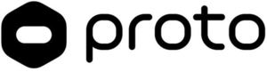

Trade Mark Journal No.2025/009 28 February 2025
WO0000001822074 (9,11,36,42)
Office of origin: United States of America
Date of International Registration:19 August 2024
Date of designation in the UK:
19 August 2024

The mark consists of a black hexagonal shape with rounded corners containing a white elongated oval shape in the center.
International priority date claimed: 16 August 2024
(United States of America)
(98702547)
- Class 9
- Computer hardware; hardware, storage and memory devices utilizing distributed ledger and cryptography technologies for use as a wallet, purse, folder, bank, safe deposit box, lockbox and vault; distributed ledger technology hardware and software; distributed ledger technology hardware and software used to create, store, manage, transmit, transfer, send and receive cryptographic keys; distributed ledger technology hardware and software used to create, store, manage, validate, transmit, transfer, mine, receive, send purchase, sell, trade and exchange digital currency, virtual currency, cryptocurrency, digital assets, blockchain assets, digitized assets, digital tokens, crypto tokens, utility tokens, digital files authenticated by non-fungible tokens, tokens of value, self-executing contracts, documents, data, information, financial data, financial information, and financial, trade and exchange transactions; distributed ledger technology hardware and software used to cryptographically sign, validate, notarize, authenticate digital and digitized documents, information, data, assets, currency, tokens, tokens of value, self-executing contracts, and financial, trade and exchange transactions; biometric hardware and software to identify, authenticate, verify, encrypt, create, manage and store signatures, cryptographic keys, credentials, biometric information and biometric data; biometric hardware and software to identify, authenticate and verify persons; computer hardware and software for mining; computer hardware, storage and memory devices utilizing distributed ledger technology for use as a wallet, purse, folder, bank, safe deposit box, lockbox and vault; computer hardware, storage and memory devices; downloadable software for creating, storing, managing, validating, transmitting, mining, receiving, sending, purchasing, selling, transferring, trading and exchanging digital currency, virtual currency, cryptocurrency, digital assets, blockchain assets, digitized assets, digital tokens, crypto tokens, utility tokens, digital files authenticated by non-fungible tokens, tokens of value, self-executing contracts, data, information, documents, financial data, financial information, and financial, trade and exchange transactions; biometric, distributed ledger, and cryptography software technology, namely, downloadable software for the verification, authentication and identification of users, encryption and the receipt, transfer, exchange and mining of digital currency, virtual currency, cryptocurrency, digital assets, blockchain assets, digitized assets, digital tokens, crypto tokens, utility tokens, digital files authenticated by non-fungible tokens, tokens of value, documents, data, information, and financial, trade and exchange transactions; downloadable software for enabling users to receive, accept, view, purchase, sell, and exchange digital currency, virtual currency, cryptocurrency, digital assets, blockchain assets, digitized assets, digital tokens, crypto tokens, utility tokens, digital files authenticated by non-fungible tokens, tokens of value, self-executing contracts, data, information, documents, financial data, financial information, and financial, trade and exchange transactions; downloadable computer software for use as digital and electronic wallets, purses, folders, banks, safe deposit boxes, lockboxes and vaults; computer hardware for cryptocurrency mining; computer hardware for cryptocurrency farming; downloadable and recorded software for cryptocurrency mining; downloadable and recorded software for cryptocurrency farming; optimized, low voltage, energy-efficient application-specific integrated circuits for mining cryptocurrency; integrated circuits for use in cryptographic accelerators; downloadable and recorded computer software for data, cryptocurrency and blockchain mining; computer hardware for digital currency, virtual currency, cryptocurrency, digital and blockchain asset, and digitized asset mining; downloadable cloud-based software for managing and monitoring cryptocurrency mining operations and servers that store cryptocurrency data; computer servers and computer systems comprised of hardware and software for cryptography and cryptocurrency mining; computer hardware for mining and energy monitoring and management; computer hardware for cryptocurrency mining, namely, case that integrates cryptocurrency mining with large-scale heating; electric control devices for heating and energy management; computer hardware for cryptocurrency mining, namely, hash boards, electric control boards, and integrated circuit chips; components for electronic cryptocurrency mining motors, namely, application specific integrated circuit (ASIC) chips being a type of integrated circuit chip for encoding and decoding digital data.
- Class 11
- Floor, air, water, and greenhouse air heating apparatus and installations; heating apparatus and installations in the nature of heating boilers associated with cryptocurrency mining.
- Class 36
- Financial services, namely, transmitting, receiving, sending, purchasing, selling, transferring, trading and exchanging digital currency, virtual currency, cryptocurrency, digital assets, blockchain assets, digitized assets, digital tokens, crypto tokens, utility tokens, digital files authenticated by non-fungible tokens, tokens of value, self-executing contracts, data, information, documents, financial data, financial information, and financial, trade and exchange transactions; electronic transaction services, namely, electronic payment and payment processing services, namely, payment and payment processing services provided via digital and electronic wallets, purses, folders, banks, safe deposit boxes, lockboxes and vaults, currency exchange services, electronic transfer of digital currency, virtual currency, cryptocurrency, digital assets, blockchain assets, digitized assets, digital tokens, crypto tokens, utility tokens, digital files authenticated by non-fungible tokens, tokens of value, and self-executing contracts, the trading of digital currency, virtual currency, cryptocurrency, digital assets, blockchain assets, digitized assets, digital tokens, crypto tokens, utility tokens, digital files authenticated by non-fungible tokens, and tokens of value, facilitation of peer to peer payment services; providing financial information in the field of biometric, distributed ledger, and cryptography hardware, software, security, and storage for digital currency, virtual currency, cryptocurrency, digital assets, blockchain assets, digitized assets, digital tokens, crypto tokens, utility tokens, digital files authenticated by non-fungible tokens, tokens of value, self-executing contracts, data, information, documents, financial data, financial information, and financial, trade and exchange transactions; broker services, namely matching cryptocurrency miners with data center hosts; financial services, namely, the provision of cryptocurrency mining services for use in generating cryptocurrencies.
- Class 42
- Providing user authentication services using distributed ledger-based software technology for cryptocurrency transactions; providing on-line non-downloadable computer software for use as a cryptocurrency wallet; providing temporary use of non-downloadable web-based decentralized applications (DApps); providing temporary use of online non-downloadable computer software to enable the creation of and access to a cryptocurrency wallet; software as a service (SaaS) services featuring software to enable the creation of digital currency, virtual currency, cryptocurrency, digital assets, blockchain assets, digitized assets, digital tokens, crypto tokens, utility tokens, digital files authenticated by nonfungible tokens, tokens of value, self-executing contracts, documents, data, and information; software as a service (SaaS) services featuring software to enable the secure storage and transfer of digital currency, virtual currency, cryptocurrency, digital assets, blockchain assets, digitized assets, digital tokens, crypto tokens, utility tokens, digital files authenticated by non-fungible tokens, tokens of value, self-executing contracts, documents, data, and information; authentication of data in the field of digital assets, digital tokens, tokens of value, cryptocurrency, selfexecuting contracts and nfts using distributed ledger technology; electronic data storage; electronic storage of digital currency, virtual currency, cryptocurrency, digital assets, blockchain assets, digitized assets, digital tokens, crypto tokens, utility tokens, digital files authenticated by non-fungible tokens, tokens of value, self-executing contracts, documents, data, and information for others; electronic storage of cryptographic keys; providing temporary use of on-line non-downloadable software for accessing, reading, and tracking information in the field of digital assets, data, cryptocurrency, self-executing contracts and nfts on a distributed ledger; technological consultation in the technology field of decentralized, self-sovereign web3 hardware, software, security, and storage for data, cryptocurrencies, self-executing contracts and nfts; data encryption services; engineering services, particularly technical project planning and design engineering; consultancy services on internet security; data security consulting services; electronic data storage; research and development of computer systems comprised of computer hardware, firmware, system software or application software for distributed ledger technology; investigation being technical research in the field of designing, design building and maintaining computer systems comprised of computer hardware, firmware, system software or application software for distributed ledger technology; providing information about designing, and design building computer systems comprised of computer hardware, firmware, system software or application software for accessing and using a distributed ledger network; providing technical advice relating to designing, design building and maintaining computer systems comprised of computer hardware, firmware, system software or application software for accessing and using a distributed ledger network; providing information about technical feasibility studies of computer systems for accessing and using a distributed ledger network; providing technical advice relating to feasibility studies of computer systems for accessing and using a distributed ledger network; software as a service, namely, non-downloadable software for storing and accessing digital currency, virtual currency, cryptocurrency, digital assets, blockchain assets, digitized assets, digital tokens, crypto tokens, utility tokens, digital files authenticated by non-fungible tokens, tokens of value, self-executing contracts, documents, data, and information; electronic data storage; providing temporary use of non-downloadable computer software that allows users to send, receive, store, and safeguard digital currency, virtual currency, cryptocurrency, digital assets, blockchain assets, digitized assets, digital tokens, crypto tokens, utility tokens, digital files authenticated by non-fungible tokens, tokens of value, self-executing contracts, documents, data, and information; providing a secure, web-based service featuring technology that enables users to remotely access, send, receive, store, and manage digital currency, virtual currency, cryptocurrency, digital assets, blockchain assets, digitized assets, digital tokens, crypto tokens, utility tokens, digital files authenticated by non-fungible tokens, tokens of value, self-executing contracts, documents, data and information; hosting a website that gives users the ability to create customized web pages featuring user-defined profiles; application service provider featuring application programming interface (API) software for integration of financial transactions into websites, mobile applications and computer hardware devices; providing user authentication services using distributed ledger, cryptography, and biometric hardware and software technology for electronic transactions; cryptocurrency mining co-location services, namely, providing facilities for the location of computer hardware for cryptocurrency mining with the equipment of others; providing online non-downloadable software for cryptocurrency mining; providing online non-downloadable software for cryptocurrency farming; rental of computer hardware for cryptocurrency mining; rental of computer software for cryptocurrency mining; providing online non-downloadable software for data, cryptocurrency, and blockchain mining; cryptocurrency mining; installation of computer software for cryptocurrency mining; development of artificial intelligence-enabled technologies for crypto data processing and cryptocurrency mining; hosting of servers, operating systems and computer applications for others including cryptocurrency mining applications; software as a service (SaaS) for managing investments, purchasing, selling, and mining cryptocurrency; cloud computing featuring software for use in cryptocurrency mining; providing temporary use of non-downloadable cloud-based software for managing and monitoring cryptocurrency mining operations and servers that store cryptocurrency data; software as a service (SaaS) platform for managing and monitoring cryptocurrency mining operations and servers that store cryptocurrency data; heat recovery computer system design for cryptocurrency mining and crypto mining integrated with heat recovery and energy saving.
Block, Inc.
Representative: Phillip A. Rosenberg Kilpatrick Townsend & Stockton LLP, 1114 Avenue of the Americas, New York 10036, UNITED STATES OF AMERICA